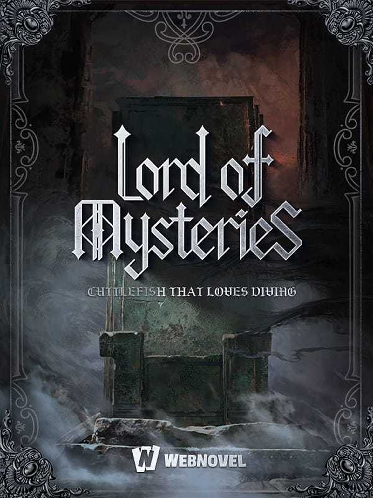

Lord of the Mysteries
Awal perjalanan Klein Moretti dalam dunia Beyonder, kabut abu-abu, Tarot Club, dan misteri yang perlahan membuka wajah aslinya.
Sinopsis ID
Zhou Mingrui terbangun sebagai Klein Moretti di dunia alternatif bergaya era Victoria, tempat mesin uap, pabrik, airship, dan difference engine hidup berdampingan dengan ramuan, divinasi, artefak tersegel, dan organisasi rahasia. Saat mencari alasan dirinya berada di dunia itu, ia mendapati bahwa bahaya dan misteri selalu mengintai di balik kemajuan zaman.
Synopsis EN
Zhou Mingrui awakens as Klein Moretti in an alternate Victorian-era world where steam, factories, airships, and difference engines exist alongside potions, divination, sealed artifacts, and hidden societies. As he searches for the reason behind his arrival, he learns that mystery and danger are never far beneath the surface.